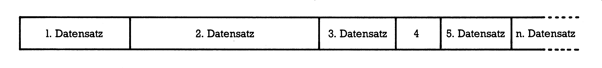
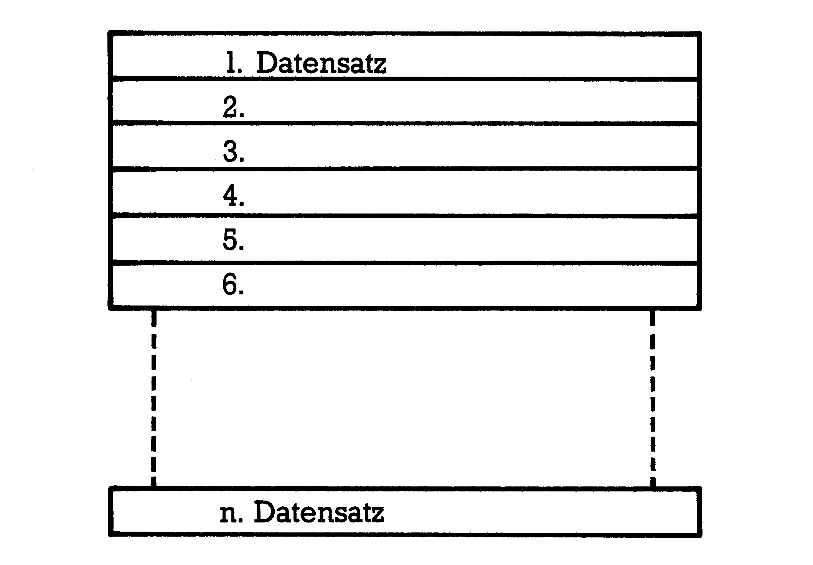
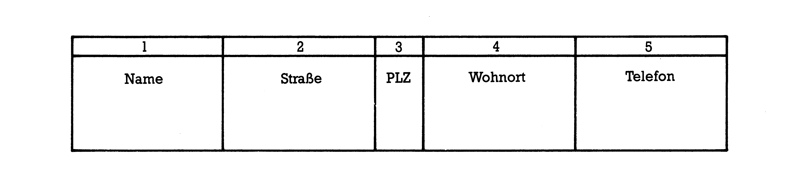
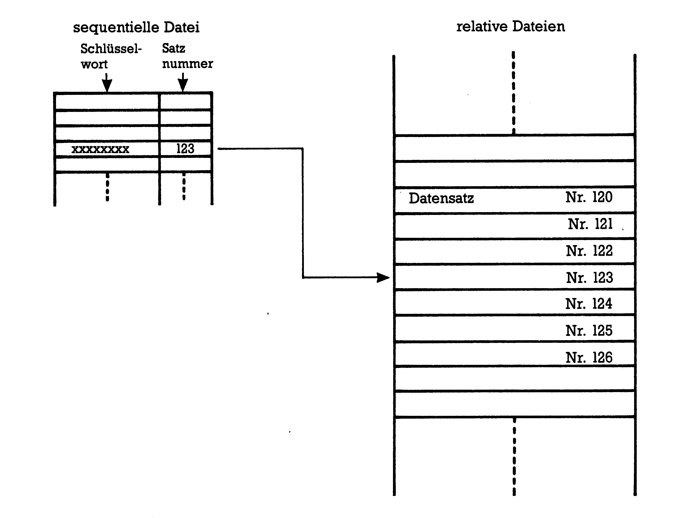

Dateien — Lebensraum für Ihre Daten
Sicher ist Ihnen die Situation bekannt: Da hat man nun eine Menge Daten im Speicher. Doch wohin damit? Wir zeigen Ihnen, wie Sie dieses Problem mit Hilfe von Dateien optimal lösen können.
Eigentlich sind Dateien nichts anderes als große Schränke, in denen die verschiedensten Daten abgelegt sind. Doch was ist eine Datei? Nun, eine Datei ist nichts anderes als eine Ansammlung von Daten, die in einer in sich abgeschlossenen Einheit wie in einem Karteikasten untergebracht sind. Einfach ausgedrückt, handelt es sich bei Dateien um Daten, die alle unter einem bestimmten Oberbegriff angesprochen werden können, dem Dateinamen. Während der letzten Teile des Basic-Kurses hatten Sie bereits ständig mit Dateien zu tun. Erst wenn das Programm auf ein externes Gerät gespeichert wird, liegt auf dem entsprechenden Datenträger eine Datei vor. In diesem Fall eine Programmdatei. Sie sehen also, Dateien werden fast immer auf externen Geräten, auch Peripherie genannt, abgelegt. Das kann die Datasette oder auch ein Diskettenlaufwerk sein. Sie sehen also, daß Dateien eine Art Langzeitgedächtnis für den Computer darstellen, das auch nach dem Abschalten weiterhin zur Verfügung steht.
Es ist leider mit den Programmdateien nicht möglich, irgendwelche Berechnungen oder statistische Auswertungen anzustellen. Dazu benötigen wir schon spezielle Daten, die für unser Problem nötig und gültig sind. Nehmen Sie zum Beispiel Ihr persönliches Adreßbuch. Jede komplette Adresse stellt eine Informationseinheit dar. Diese Adressen können Sie genausogut in einer Datei ablegen. Eine Datei besteht aus einzelnen Datensätzen. Jeder Datensatz nimmt eine Informationseinheit auf, in diesem Fall eine ganze Adresse.
Um Dateien anzulegen, benötigt man natürlich ein entsprechendes Speichermedium. Dem C 64-Besitzer stehen hier zwei Möglichkeiten zur Verfügung. Entweder er arbeitet mit der langsamen Datasette oder mit der nicht nur in bezug auf die Geschwindigkeit schnelleren Floppy-Disk. Sehen wir uns zunächst eine Dateiform an, die sowohl von der Datasette als auch vom Floppy-Laufwerk 1541 beherrscht wird.
Kassette oder Diskette?
Es handelt sich um sequentielle Dateien. Bei diesen Dateien werden die Daten im Gänsemarsch übertragen, bis der Computer ein Return-Zeichen schickt. Dieses Return wird beispielsweise bei der Erfassung des Datensatzes an das Ende Ihrer Eingabe angehängt. Return ist nicht nur eine Taste Ihres Computers, sondern eigentlich auch ein Zeichen. Es hat einen eigenen internen Code (13) und wird bei Eingaben von seiten des Anwenders immer an das Ende eines Strings angehängt. Return ist sozusagen ein spezielles Endemerkmal für den Computer. So kann der Computer auch später beim Lesen der Datei wieder das Ende eines Datensatzes finden. Es ist bei der Arbeit mit sequentiellen Dateien egal, wie lang ein Datensatz ist, es wird prinzipiell bis zum Return übertragen. Der nächste Satz wird dann ganz einfach an das letzte Return angehängt. In Bild 1 sehen Sie diesen Vorgang grafisch dargestellt. Um in eine solche Datei etwas zu schreiben, gehen Sie folgendermaßen vor:
10 OPEN 1,8,2,"TEST,S,W"
20 PRINT#1,"DIES IST EIN DATENSATZ"
30 CLOSE 1
In Zeile 10 teilen Sie dem Computer mit, daß Sie im folgenden mit der sequentiellen Datei »TEST« arbeiten wollen. Einzig und allein dazu dient der OPEN-Befehl: Zuweisen einer Datei zu einer Nummer, unter der diese immer wieder angesprochen werden kann. Durch das »S« hinter dem ersten Komma kennzeichnen Sie diese Datei als sequentiell. Das »W« steht für »WRITE«, also Beschreiben der Datei. Äquivalent würde für Lesen ein »R« wie »READ« stehen und für das Anfügen von Daten »A« wie »APPEND«. Nach einem OPEN-Befehl ist eine Datei so lange verfügbar, bis ein abschließender CLOSE-Befehl folgt, wie Sie ihn in Zeile 30 sehen. Die Sache mit OPEN und CLOSE gilt, wie Sie im weiteren feststellen werden, nicht nur für sequentielle Dateien. Doch nun zur Erklärung der vielleicht noch etwas mysteriösen Zahlen nach dem OPEN-Befehl.
Die Eins ist die logische Dateinummer. Unter dieser Nummer können Sie im weiteren Verlauf Ihres Programms die Datei »TEST« ansprechen und bearbeiten. Die zweite Zahl ist die Geräteadresse. In unserem Fall wird das Diskettenlaufwerk mit der Nummer 8 angesprochen. Die dritte Zahl schließlich verkörpert die Sekundäradresse, deren Bedeutung weiter unten noch genauer erklärt wird. Wie eine Datei angesprochen wird, sehen Sie in Zeile 20. Der bereits bekannte PRINT-Befehl sieht diesmal etwas anders aus. Er bezieht sich nicht auf den Bildschirm, sondern auf die in Zeile 10 eröffnete Datei »TEST«. Der Computer erkennt das an dem Nummernkreuz (»#«), das dem PRINT folgt. Danach steht dann noch die logische Dateinummer mit der die Datei zugewiesen wurde. Der nachstehende String wird als einzelner Datensatz in die Datei »TEST« geschrieben. Damit haben wir bereits eine komplette Dateioperation durchgeführt. Befassen wir uns jetzt näher mit der sinnvollen Anwendung von sequentiellen Dateien. Dazu muß erst noch geklärt werden, wie das Floppylaufwerk auf eine Datei zugreift. Wenn eine Datei zum Lesen eröffnet wird, positioniert die Floppystation den Schreib-/Lesekopf auf den Anfang der Datei. Mit jedem Lesezugriff wird ein Datensatz weiter positioniert. Beim Speichern eines Satzes wird dieser mit einem Return am Ende versehen. Daran erkennt die Floppystation bei späteren Zugriffen das Satzende. Auf diese Weise können alle Sätze nacheinander bis zum Ende der Datei eingelesen werden. Um eine sequentielle Datei als Gesamtes zu bearbeiten und variabel auf die einzelnen Datensätze zugreifen zu können, muß also die gesamte Datei in ein dimensioniertes Feld geladen werden. Nach der Bearbeitung speichert man dann die Datei wieder als Ganzes auf Diskette ab. Eines ist beim Öffnen einer bereits vorhandenen sequentiellen Datei immer zu beachten. Wenn die Datei ein zweitesmal zum Schreiben geöffnet wird, werden eventuell vorhandene Daten überschrieben. Es besteht auch keine Möglichkeit, Datensätze in eine solche Datei einzufügen. Sie haben nur die Möglichkeit, Daten anzuhängen. Eingelesen werden die jetzt vorhandenen Daten wie folgt:
10 DIM A$(100)
20 OPEN 1,8,2,"TEST,S,R"
30 FOR I=1 TO 100
40 INPUT#1,A$(I)
50 IF ST=64 THEN CLOSE 2:GOTO 70
60 NEXT I
70 ...In Zeile 10 wird als erstes ein String-Feld dimensioniert, in das die Daten später eingelesen werden. Danach wird in Zeile 20 die sequentielle Datei »TEST« zum Lesen eröffnet. In der FOR..NEXT-Schleife erfolgt das Einlesen der Daten mit Hilfe des INPUT #-Befehls, der hier, im Gegensatz zum PRINT #-Befehl, Daten aus der Datei holt. Irgendwann erreicht natürlich jede Datei das Ende. Dieses muß allerdings vom Programmierer abgefragt werden, da der Computer nicht selbständig auf das Erreichen des Dateiendes reagiert. Der C 64 verwendet hierzu eine vordefinierte Variable: ST. Sobald diese gleich 64 wird, ist das Dateiende erreicht und die Eingabeschleife wird verlassen. Dann stehen auch alle Datensätze im Feld A$ und können nach Belieben bearbeitet werden. Wenn die Tabelle wieder gespeichert werden soll, muß die Datei erneut, und zwar diesmal zum Schreiben, geöffnet werden. Sollen nur Datensätze angehängt werden, veranlaßt ein »A« anstelle des »R« oder »W« beim OPEN-Befehl die entsprechende Operation. Nun haben Sie die nötigen Grundkentnisse erworben, um mit sequentiellen Dateien zu arbeiten. Allerdings haben diese einen entscheidenden Nachteil. Da zur effektiven Bearbeitung immer Felder zu definieren sind, stößt man bei größeren Dateien sehr schnell an die Grenzen des Speichers.
Er wäre daher angebracht über eine Dateiart zu verfügen, in der man beliebig hin- und herspringen kann. Eine Datei also, von der sich jederzeit ein beliebiger Datensatz einlesen läßt. Die Floppy 1541 bietet natürlich auch diese Möglichkeit, im Handbuch sind darüber allerdings nur sehr dürftige Informationen zu finden. Eine solche Datei wird als relative Datei bezeichnet. Bei einem derartigen Dateiaufbau hat der Programmierer einiges mehr zu beachten als bei den sequentiellen Dateien.
Schneller Zugriff
Relative Dateien müssen auf jeden Fall mit einer genau vordefinierten Satzlänge angelegt werden (Bild 2). Womit wir bereits beim ersten Schritt zur Bearbeitung solcher Dateien wären. Bereits vor dem Erstellen eines Programms unter Verwendung relativer Dateien müssen Sie sich Gedanken über den Inhalt einer solchen Datei machen. Denn davon ist letztendlich auch die Länge des einzelnen Datensatzes abhängig. Hier haben Sie noch zusätzlich die Möglichkeit, einen Datensatz in verschiedene Felder aufzuteilen. Wozu nun das Ganze? Stellen Sie sich doch einfach vor, Sie müßten eine Adreßverwaltung aufbauen. In einem Datensatz müßten dazu alle Daten zur Person vorhanden sein (Bild 3). Man benötigt den Namen, die genaue Anschrift und natürlich auch die Telefonnummer. Wenn möglich schadet auch die Bankverbindung nichts. Doch nun zurück zu den relativen Dateien. Um auf einem Datensatz zu positionieren, muß dieser über eine Nummer angesprochen werden. Dazu sehen wir uns zunächst einmal den für eine relative Datei nötigen OPEN-Befehl an:
OPEN 1,8,2,"TEST,L,"+CHR$(50)

Keine Angst, das Ganze ist nur halb so schlimm, wie es auf den ersten Blick aussieht. Sie wissen bereits, daß mit dem OPEN-Befehl eine Datei eröffnet, beziehungsweise in diesem Fall der logischen Dateinummer eins zugewiesen wird. Die Dateinummer darf Werte zwischen eins und 127 annehmen. Das »L« zwischen den Kommata nach dem Dateinamen »TEST« teilt der Floppystation mit, daß noch eine Satzlänge folgt. Die Satzlänge wird als String übertragen. Dafür ist die CHR$-Anweisung verantwortlich. Näheres zu dieser Anweisung finden Sie im Handbuch des C 64. In unserem Beispiel beträgt die Satzlänge genau 50 Zeichen. Somit wurde also »TEST« als relative Datei eröffnet. Nun benötigen Sie auch noch eine Anweisung, um innerhalb der Datei auf einem beliebigen Datensatz positionieren zu können. Jetzt wird es schon etwas komplizierter. Nun muß zuerst noch der Befehlskanal der Floppystation geöffnet werden. Dieser Kanal hat die Nummer 15, wie Sie auch dem Floppy-Handbuch entnehmen können. Der zusätzliche OPEN-Befehl sieht dann wie folgt aus:
OPEN 2,8,15Als nächstes muß natürlich die genaue Datensatznummer, die bearbeitet werden soll, übertragen werden. Dies geschieht mit folgender Befehlszeile:
PRINT#2,"P"+CHR$(2)+CHR$(LB)+CHR$(HB)+CHR$(1)Gehen wir zur Erklärung dieser wirr erscheinenden Zeile schrittweise vor. Die logische Dateinummer (2) spricht hier eindeutig den Befehlskanal des Floppylaufwerks an, den wir weiter oben geöffnet haben. Danach wird als String die Sekundäradresse der relativen Datei übertragen. Diese Adresse ist die letzte der drei Zahlen, die bei der Eröffnung einer Datei angegeben werden. Die Sekundäradresse darf zwischen zwei und 14 liegen. Die nächsten beiden CHR$-Strings sind für die Satznummer verantwortlich. Sie werden sich jetzt zu Recht fragen, wieso zum Übertragen einer Zahl zwei Werte benötigt werden. Mit einer CHR$-Anweisung können nur Werte bis maximal 255 übertragen werden. Eine relative Datei kann aber ohne weiteres über 1000 Sätze beinhalten. Deshalb muß die Datensatznummer in zwei Werte aufgespalten werden. Diese Werte lassen sich mit folgender Formel einfach errechnen:
HB=INT(Satznummer/256)
LB=Satznummer-HB*256Jetzt haben wir zwei Werte, die ohne Probleme übertragen werden können. Die letzte CHR$-Anweisung schließlich positioniert auf ein bestimmtes Zeichen innerhalb eines Datensatzes. So können Sie, wenn wir einmal das obige Beispiel der Adreßverwaltung heranziehen, immer auf das gewünschte Feld positionieren. Der Name oder die Straße kann direkt und ohne Umwege gelesen werden. Dies setzt natürlich voraus, daß alle Felder einzeln gespeichert sind. Wenn nämlich die Felder einzeln gespeichert werden, setzt der Computer an das Ende eines jeden Feldes ein Return, das dann beim Lesen für den INPUT #-Befehl das Feldende kennzeichnet. Wie bereits erwähnt, können Sie unter Verwendung der relativen Dateiverwaltung ständig in der Datei vor- und rückwärts positionieren. Nachdem Sie jetzt alles Wissenswerte über sequentielle und relative Dateien erfahren haben, sehen wir uns die weitaus komfortabelste Dateiverwaltung aus der Nähe an. Dazu führen wir als erstes den Begriff der index-sequentiellen Dateien ein. Diese Dateiart ist eine Mischform aus den bereits besprochenen Arten. Dazu werden sowohl sequentielle als auch relative Dateien benötigt.
Professionell
Vielleicht ist Ihnen der Gedanke schon in den Sinn gekommen. Relative Dateien sind zwar gut, schnell und schön, allerdings muß man, um einen bestimmten Datensatz anzusprechen, die entsprechende Nummer im Kopf haben. Um zum Beispiel in einer Adreßdatei auf die Daten eines Herrn Müller zuzugreifen, müssen Sie die entsprechende Datensatznummer wissen. Es wäre doch eine sehr große Erleichterung, wenn man nur den Namen Müller einzugeben brauchte, und schon erscheint der gewünschte Datensatz auf dem Bildschirm. Müller wäre demnach der Schlüssel für den entsprechenden Datensatz. Über das Namensfeld unserer Adreßdatei könnten wir also beliebig auf die einzelnen Sätze zugreifen. Wie kann dies nun mit den Möglichkeiten, die der C 64 zusammen mit der Floppy 1541 bietet, gelöst werden? Genau dazu werden jetzt beide Dateiarten kombiniert. Es muß eine sequentielle Datei geben, die folgende Daten enthält: Den verwendeten Schlüssel, in diesem Falle den Namen, und natürlich die Datensatznummer, unter der der zugehörige Datensatz abgespeichert ist. Die sequentielle Datei, die diese Informationen enthält, befindet sich zu diesem Zweck in einem dimensionierten Feld im Speicher. Wird nun ein bestimmter Name angefordert, sucht man erst in der Tabelle nach dem Namen und greift dann über die ebenfalls in dem Feld vorhandene Satznummer auf die relative Datei zu, in der die kompletten Adressen abgespeichert sind (Bild 4). Sie müssen nur immer darauf achten, daß, wenn Sie Datensätze löschen oder verändern, das Feld immer mit reorganisiert wird. Die Schlüsselangaben müssen also verschwinden, wenn eine Adresse gelöscht wird. Analog erfordert ein Erweitern der Adreßdatei einen neuen Eintrag in die Tabelle. Die Tabelle muß natürlich beim Start des Programms eingelesen werden und beim Verlassen wieder gespeichert werden.

Der Vollständigkeit halber seien noch zwei Dateitypen erwähnt, deren Einsatz durch die Komplexität den Profis in Sachen Assemblerprogrammierung vorbehalten ist. Da wären zum ersten die USER-Dateien, die im großen und ganzen wie die sequentiellen Dateien aufgebaut sind. Diese Dateien werden beispielsweise für das Spooling verwendet. Beim Spooling wird eine Datei direkt von Diskette auf Drucker umgeleitet, ohne daß dabei Speicherplatz oder Rechenzeit beim C 64 beansprucht wird. Allerdings sind solche Lösungen nur in Maschinensprache zu verwirklichen. Der Einsteiger ist hier also auf bereits vorhandene Programme angewiesen. Wer sich mit dem professionellen Diskettenhandling näher beschäftigen möchte, der erhält alle nötigen Informationen in dem Buch »Die Floppy 1541« von Karsten Schramm.
Vor allem für Geos-Besitzer ist die zweite, schwieriger zu handhabende Dateiart interessant. Diese Dateien nennen sich VLIR-Dateien. Eine Abkürzung für Variable Length Indexed Record. Was auf Deutsch soviel heißt wie indizierte Datensätze mit variabler Länge. Die relativen Dateien werden hier des Mankos enthoben, immer an eine feste Satzlänge gebunden zu sein. Diese Dateien haben den riesigen Vorteil, nicht nur mit variabler Satzlänge arbeiten zu können, sondern sind zusätzlich relativ aufgebaut.
Nachdem Sie einiges an Theorie über Dateien und die Arten derselbigen erfahren haben, ist es wohl das beste, Sie versuchen sich mit ersten kleinen Programmen in Richtung Datenverwaltung. Wenn es auch nicht auf Anhieb klappt, denken Sie daran: Jeder hat einmal angefangen, die Schwierigkeiten sind immer dieselben und werden früher oder später von Ihnen selbst aus dem Weg geräumt.
(rf)